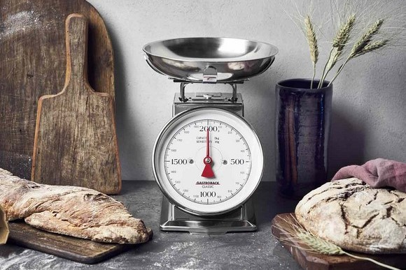

Home
Täglich
Rezepte
Bedarf
Neues Rezept
Rezept zusammenstellen
Kochen
mit Teig
Pizza
2 Stück = ca. 860 kcal
Flammkuchen
4 Stück = ca. 760 kcal
Wraps
2 Stück = ca. 581 kcal
Aufläufe
Lasagne Bolognese
1/6 Auflauf = ca. 828 kcal
Lisa's Lieblingsauflauf
1/3 Auflauf = ca. 841 kcal
Nudelgerichte
Spaghetti Bolognese
1/4 Gericht = ca. 898 kcal
Spaghetti Carbonara
1/3 Gericht = ca. 734 kcal
Reisgerichte
Lachs-Gratin
1/2 Gericht = ca. 865 kcal
Hähnchen Curry
1/2 Gericht = ca. 821 kcal
Butter Chicken
1/2 Gericht = ca. 786 kcal
Kartoffelgerichte
Bratkartoffeln
1/2 Gericht = ca. 878 kcal
Kartoffeln mit Steak
1/2 Gericht = ca. 825 kcal
Kartoffeln mit Hähnchen
1/2 Gericht = ca. 652 kcal
Suppen
Tomatensuppe
1/2 Gericht = ca. 523 kcal
Kürbissuppe
1/3 Gericht = ca. 665 kcal
Nudelsuppe von Oma
1 Gericht = ca. 713 kcal
Käselauchsuppe
1/3 Gericht = ca. 710 kcal
Desserts
Apfelgrütze mit Vanillesoße
1 Portion = ca. 278 kcal
Pradies Creme Schoko
1 Portion = ca. 167 kcal
Erdbeeren und Vanillepudding
1 Portion = ca. 190 kcal
Backen
Brot
Landkruste
1 Scheibe = ca. 76 kcal
Joghurtkruste
1 Scheibe = ca. 122 kcal
Weltmeisterbrot
1 Scheibe = ca. 125 kcal
Dinkel-Vollkornbrot
1 Scheibe = ca. 111 kcal
Vollkorntoast
Weizenbrot
Schwarzwälder Landbrot
Feinbrot
Brötchen
Weizenbrötchen
Dinkelbrötchen
Rustikale Frühstücksbrötchen
Schokohörnchen
Muffins
Zitronenmuffin
1 Muffin = ca. 266 kcal
Schokostreuselmuffins von Mama
1 Muffin = ca. 323 kcal
Oreo-Cupcakes
1 Cupcake = ca. 470 kcal
Kuchen
Apfelstreuselkuchen mit Vanillepudding
1 Stück = ca. 346 kcal
Apfelkuchen vom Blech
1 Stück = ca. 266 kcal
Käsekuchen
1 Stück = ca. 402 kcal
Mandarinen-Schmand Kuchen
1 Stück = ca. 289 kcal
Kekse
Butterplätzchen
1 Stück = ca. 66 kcal
Vanillekipferl
1 Stück = ca. 78 kcal
Zimtsterne
1 Stück = ca. 71 kcal
Schoko Spritzgebäck
1 Stück = ca. 89 kcal
Marzipan Spritzgebäck
1 Stück = ca. 89 kcal
Haferkeks
1 Stück = ca. 48 kcal
Kalorien berechnen

In welchem Bereich sollen Kalorien berechnet werden?
Oder wähle ein Rezept aus.